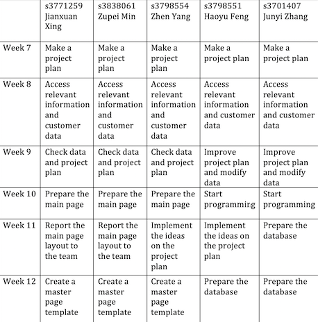
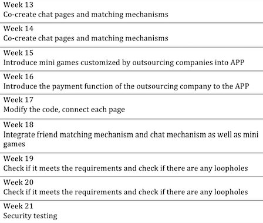

Team Profile

Team AC
Personal information
①Junyi Zhang froms Team AC, student number is s3701407, student email is s3701407@student.rmit.edu.au. I was an overseas VCE student who can speak Chinese and English. Before coming to Australia, I played badminton pretty well. After experiencing the culture of Australia, I started to get in touch with skateboarding, because I often saw groups of skateboarders on the road, and the skateboarding culture slowly affected me. I also raised a very cute lop-eared rabbit and it is one year old.The richness and creativity of the IT industry has attracted me deeply. I can develop software that I can think of or design a web page that I am satisfied with, and so on. At the same time, the salary level in the IT industry is also considerable. After possessing a certain ability, as an IT staff, you can often get a good salary to support yourself and prove your value to the society. My interest in IT started three years ago. I have a friend who understands IT much better than me, so I usually talk to him about this aspect. My interest in IT is a cumulative process.
②ZHEN YANG,a Chinese boy from Team AC who is 20 years old now.This is my first semester of bachelor of information technology.Actually,I completed English training at REW from August to December last year.My nick name is Melo, probably some people are familiar with this name,that's because I used the name of one of my idols. He is a famous NBA star named Carmelo Anthony,people like to call him Melo. I am interested in almost all mainstream sports but most of them are just limited to watching games.Even if I don not participate in some sports in reality,however,the excitement of sports games still attract me deeply.So far I am more interested in security in IT. In fact, I do not know much about the IT field, but security is an absolutely indispensable part of the IT industry. Although the security in IT is complex and difficult like the encryption and decryption of various instructions, the principles are worthy of research. Honestly,so far I have no IT experience because I just study in university.Probably the only one experience is I have design a mini application as final exam when I studied in China's university.
③I am HAOYU FENG from CHINA, a boy born in 1999 who froms Team AC. You can call me Brook. I do not have religion. I studied Computer Science and Technology at Beijing Normal University, Zhuhai campus (BNUZ) for two years from 2017 to 2019. There is the collaboration between RMIT and BNUZ so I choose to study bachelor of Information and Technology at RMIT for two years to get double bachelor degree certificate. Now I can speak Chinese and English and I hope to master Japanese in the future. Watching anime in pastime leads to my interest in Japanese. Actually, basketball is my favorite hobby. Russell Westbrook, an NBA star, is my favorite player. I am willing to try new things and enjoy communicating with people. The interesting point is that when people discuss the same thing, they often get different opinions and perspectives.I like mathematics very much and I like to solve problems with logical thinking. I feel a strong sense of accomplishment when problems are solved so I prefer IT to other majors.I joined the ACM Association before.Teachers and seniors taught me some simple algorithms and data structures which help me a lot in IT field.
④My name is Zupei Min(Jack), froms Team AC. I am 20 years old who come from China, when l finished my junior middle school, l came to Melbourne. Chinese is my first language, and English is my second language. As for me, l had learnt 3 years Information Technology in my junior middle school. However, when l started my high school in Melbourne, l did not choose IT course, hence l did not have deep foundation for IT before the university.When l entering high school, l began to discover the magic of computers. School encourages us to using the laptop, l have to learn more functions to help the study. The most interesting part of computer for me, is that to design the games. Especially, when you playing a game, it can not meet your needs, or you have a good idea for the improvement of this game. Hence, to develop a game that can catering to young people taste, and can catch people eyes at the first time is my dream. Overall, although at the beginning, l did not have elementary knowledge about IT, but it is also my advantages, I will be commit to make these boring web pages, injecting cultural features, and designing a more colorful Internet, the curiosity about information technology will push me forward.
⑤My name is Jianxuan Xing ,from Team AC, a RMIT student, i am a international student from china, It has been five years since I came to Melbourne in 2015. My high school in ringwood secondary college is really a place full of memories. After three years of high school life, I successfully passed the VCE exam and finally entered my dream. RMIT. I like playing basketball and computer games such as league of legend, CSGO, I also have a cute guinea pig. He is very timid, but he likes me very much.i was in RMIT last year for diploma of IT. When i was in high school, i have learned PY charm, and also going to the work shop to help teacher with his work, since that moment i feel that I have an indissoluble bond with IT，that is why i want to learn IT is i am really intrested in mobile app, database and create website.
I think IT is one of the most promising industries at the moment, because now is the era of big data, the popularisation of the Internet and mobile phones makes the current society very convenient. In summary, the IT industry is very promising. Prospects, this is one of the reasons why I choose IT.
Group Processes
In assignment 2, each member of the TeamAC performed very well. From the beginning, we actively communicated and exchanged opinions. In addition to communication, what is more valuable is unity. When some team members are in trouble, others volunteer to help share the burden. It's a good teamwork atmosphere. It was everyone's hard work that led to a satisfactory assignment. Through feedback from Assignment 2, the team conducted a meeting summary. We all agreed that although everyone has enough ability to do their part, more communication is needed because it's a team task. Sometimes even though some part of the assignment is simple, no one knows what the content of that part is except the person who has done it. This is the problem that was exposed in assignment 2. More than that, we need to speed process up before meet deadlines. It is reasonable and worthwhile to leave at least one day for everyone to summarize and review the overall assignments. In general, TeamAC does not have major problems, but still needs to reflect and improve. This is also the meaning of the team, to help teammates improve.
Career Plan
After reading Job Title Rank and required skill set Rank in terms of demand from employers, only Yang Zhen changed his ideal Job because he argued that the Job skills required in the initial ideal Job were not highly correlated with IT. Although he has changed, we all share the same love for IT area. Everyone's career plan is different, such as game development, Android development, mobile apps, and so on. When it comes to summarizing everyone's views on whether their dream job has changed, there is a very obvious similarity. Whether or not the ideal job is marketable or the skills required are tough, we stick with what we've chosen. It’s moving because it’s the power of the ideal that pushes us to learn. Our view of IT work is very pure, and that's love. We all hope to acquire professional knowledge and skills in IT and contribute to the development of the society. Everyone works from a similar starting point to a different end point to achieve it.
Project Description
Topic
Our group will focus on a trend of the times, multi-functional, simple and easy to operate applications, this program will combine a variety of popular features，In order to meet the fast-food lifestyle of contemporary people, we have launched ZTW, an application integrating mobile payment, social activities and games and entertainment. This app fully meets the needs and interests of most age groups. Unlike other social software (such as INS, Facebook, Wechat) that chat and share their daily life, ZTW includes online dating of young people, Be able to match the opposite sex with their personality for single people. In addition, after the match is successful, if they get along well, they can choose to get along with each other more deeply, such as voice or video chat, or use the application's small program to play games together to deepen the tacit understanding. In this way, young people can easily carry out real online social contact, not only do not need to have face-to-face awkward conversation, but also can expand their production to find love and friendship for themselves, reduce the burden and difficulties. Similarly, for the middle-aged and the elderly, we mainly introduce mobile payment functions that do not require many operations. Because of their daily needs, such as purchasing daily necessities, going out to take public transportation, carrying wallets or excessive cash is not safe. Now they only need to download ZTW on their mobile phones. They don't need highly configured mobile phones. As long as they are smart phones, they can download them for free. They just need to register an account, bind their mobile phone number, ID card and bank card, and they can make payment anytime and anywhere. They have no operation skills. As long as they scan the QR code, they can easily complete the collection and payment, and do not need the bus card You can scan the code directly to get on the bus. If you forget the password, you can also retrieve the password directly through the bound mobile phone through SMS.
Nowadays, there is a common problem in many software or applications, that is, only focus on a single user group. After all, in the current prospect of electronic application development, young people often represent the development direction, trend and large group. After all, young talents are the main force of electronic products. However, the emergence of ZTW is to develop a multi age user group. We should not only focus on the young people, because the competition here is very encouraging, and we need to compete with many other applications to grab users. We need to pay attention to the elderly group and use simple and convenient operations to attract their attention. In this way, we can ensure that the user group is large enough. We can also make full use of our advantages, that is to be able to master the operating procedures quickly and skillfully. After all, young people nowadays also like fast and convenient software. ZTW can use the most concise structure to let them quickly integrate into the social circle, and know the purpose of each option and key, as well as a few shortcut keys and hidden functions.
In addition, due to the single function of many applications now, although it can be done this can focus on developing their advantages and popular features. But this also leads to users need to download many applications with different functions, which is not only difficult to find, but also consumes a lot of mobile phone memory space. ZTW is committed to the transformation of the current application environment, with the smallest memory environment, in exchange for the most comprehensive and most diversified applications.
Motivation
Nowadays, there is a common problem in many software or applications, that is, only focus on a single user group. After all, in the current prospect of electronic application development, young people often represent the development direction, trend and large group. After all, young talents are the main force of electronic products. However, the emergence of ZTW is to develop a multi age user group. We should not only focus on the young people, because the competition here is very encouraging, and we need to compete with many other applications to grab users. We need to pay attention to the elderly group and use simple and convenient operations to attract their attention. In this way, we can ensure that the user group is large enough. We can also make full use of our advantages, that is to be able to master the operating procedures quickly and skillfully. After all, young people nowadays also like fast and convenient software. ZTW can use the most concise structure to let them quickly integrate into the social circle, and know the purpose of each option and key, as well as a few shortcut keys and hidden functions.
In addition, due to the single function of many applications now, although it can be done this can focus on developing their advantages and popular features. But this also leads to users need to download many applications with different functions, which is not only difficult to find, but also consumes a lot of mobile phone memory space. ZTW is committed to the transformation of the current application environment, with the smallest memory environment, in exchange for the most comprehensive and most diversified applications.
Landscape
Based on ZTW is a multi-functional social media, which integrates popular technologies in multiple fields, including mobile payment and online dating. However, ZTW is still essentially a social software, daily chats and posts are essential. Nowadays, there are lots of popular social software such as Instagram and twitter in different countries and regions. These two different styles of social software attract a large number of users with their unique advantages. Instagram's picture display and twitter topic discussion are their respective signatures. Compared with them, ZTW aims to create a platform with powerful payment functions and dating matching functions while maintaining daily communication with social software. The payment function we pay attention to is not only to allow users to purchase goods on the app, but to apply ZTW's payment function to daily life like Applepay. People only need to bind a bank card on ZTW and then use an e-wallet to pay. In addition, compared with Apple pay, under the same function, people may be more willing to use their favorite social apps to pay. For the matching dating feature, Tinder is the choice of lots of people. Compared with Tinder, our ZTW will pay more attention to daily communication. A number of people will choose to communicate on other software like facebook after matching on Tinder, but ZTW will focus on becoming one of the platforms for people to communicate daily so users can directly chat on ZTW after matching. Besides, we also added a lot of games to the matching function to enrich the fun.
Aims
We want to make a collection: chat, make friends, games, payment, etc. An app that can bring great convenience to people’s lives. In the 21st century, the development of technology is faster and faster, and people’s lives are also It is becoming more and more convenient, and the purpose of our app (ZTW) is to gather all the conveniences and one body. Here you can choose to use your friend’s phone number or friend’s ID to add friends, or you can use one of our ZWC The function is called (Straight Strike), you can upload your handsome photos to this function, you can filter so that the opposite sex or the same sex can be drawn to you, if you and that (stranger) like each other at the same time, then you will Matching is successful, (this is an overview of the two functions of making friends and chatting) Of course, our game function is also among them. The game function you can enjoy a stand-alone game or you can play an online game with your friends (development stage). In the function, you can choose to add your bank card in our (ZWC) app, and you can use Zpay to make tab payments at any time, or you can use your bank card to recharge in the app. There will be interest and discount payments for Zpay account recharge.
The ZTW APP was created to serve the rapid development of modern society and to fit people's fast-paced and efficient society. With the continuous improvement of the online world, the quality of people's real life has declined, and many tasks can be done better with electronic devices. ZTW is a good way to help people perform some tasks in daily life, such as: payment work, social chat, game entertainment, and AI matching users. The payment function in the APP must be powerful and the payment process needs to be fast and convenient. Due to the continuous development of electronic products, the social chat part is very important among the main functions of the APP. If we have enough time or resources, we will do better with the two goals of game entertainment and AI matching users, so as to maximize the user experience.
The goal of AI matching users is to require each user to make a series of test questions after entering the APP, and use personality and behavior tests to match users with appropriate dialogue candidates. Social products attach great importance to the development of a community atmosphere. For a social app, the more important activation should be during the first chat. Only when the community atmosphere is harmonious and respectful will the scale of users grow day by day. ZTW’s social positioning is very accurate. Based on the results of the test and analysis done by the user, AI intelligently helps users find strangers with the same hobbies, establish communication links efficiently and conveniently, save time and cost of communication with each other, and expand the social circle. Because of the rapid growth of Internet users, users and enough time are spent on electronic mobile terminals, the trend in the future users will also invest more time and energy. Opportunities for development are more reflected in the increasing demand for social interaction in modern society, and more and more diverse social methods are favored by people. In this environment, Internet users' demand for instant messaging tools will gradually increase.
Today, with advanced technology, digital payment has become a development trend. Both online and offline payments have greatly changed the traditional methods which have profoundly affected people's daily lives. Our team is also working hard to plan and develop in order to achieve the goal of ZTW-Pay. In order to realize the widespread use of ZTW-Pay in the market, we first designed and developed the functions which including the binding/unbinding of bank cards, transfer and payment, etc. The next step is the development of the payment model. We are divided into online and offline payment modes. Online payment means that users can choose ZTW-Pay as a payment method when purchasing goods on the website or platform. This requires us to cooperate with other payment platforms reached cooperation agreements. In terms of offline payment, we need to implement three payment methods for ZTW, which include e-wallet payment, QR code payment and face payment. E-wallet payment is just like PayPal. Users can bind a credit card to ZTW and show the e-wallet to pay when shopping. Besides, QR code payment allows users to scan the merchant's face and enter the payment QR code to complete the payment. For face-swiping payment, users can pay by scanning the face where the face-swiping device is set up. In this way, we have realized the function of ZTW-Pay, but to realize the wide application of ZTW-Pay in the society, we need to guarantee the quality of ZTW and do a good job in brand promotion for a long time.
In today's global software development, although social software emerges in an endless stream, there is still no one that can be accessible and universal in any country in the world. Therefore, the purpose of our research and development of ZTW is to realize a real global village, so that people in the world can have barrier free communication and understanding, build smooth communication channels. In addition, our application is not only limited to chat, dynamic these are no longer new features. We will combine ZTW with electronic payment and online banking. Users can bind their own bank cards and ID cards to make online payment anytime, anywhere, without any service charge or waiting for a long time. Users can also send gifts to enhance the intimacy with the netizens they know on the Internet. In this way, we not only drive electronic payment, but also increase the social properties of the software. It is precisely because ZTW focuses on the goal of globalization, so electronic payment is also one of the channels of communication. ZTW's electronic payment will strive to be able to circulate around the world, all currencies will be recognized, and can complete most cross-border transactions in one working day. Our goal is to promote mobile payment worldwide, which can be easily completed with a two-dimensional code The purpose of the transaction is to get rid of the shackles of cash and credit card when people go out, so that users no longer need wallet and change when they go out. At the same time, in order to expand the age of users, we will greatly reduce the operation steps and difficulties, so that users can complete registration and proficient use in the shortest time. We will choose the design method that is most suitable for users in safety and convenience. In addition, in the most important aspect of data processing and storage, we will focus on security research to ensure that each user's data will not be used for criminal or political channels. We will set up a separate database center in each country with local staff and government management to ensure compliance with local laws and requirements. In terms of the central processor in the headquarters, we will use encryption devices so that only relevant personnel can access the core data and avoid website crash and hacker attacks.
Plans and Progress
In order to make the software application we designed come true, we will focus on the development of new design solutions that attract users' attention. For example, we will pay more attention to whether the application can be closer to life, that is to say, it can give users the greatest environment and experience. For example, key tone, open a certain category of animation design. Because now most applications, in order to be faster or pay more attention to a specific function, tend to ignore other details of the design, too simple wind design, will reduce the user experience, too formatted background, single color, will quickly reduce the user's freshness, so that they are not willing to do more in-depth exploration and understanding of other functions. In order to solve this problem, we will launch some simulated reality functions, such as stereo sound effect, dynamic background design, personalized cover and so on. With the most detailed design, the software can find a middle point between tedious and simple, which will not make users feel fancy and dazzled, but also allow users to design their own personal home pages, with the most consistent Your own style to let other users know the most real you on the Internet. Second, we will introduce some hidden functions in each update and optimization. These functions require users to discover and discover them in the process of using them again and again, such as brand-new background board, personalized background music, head picture frame and other small decorations, so that users can experience the fun of exploration, and will not let them feel that the software is outdated and unchanged This we will adhere to monthly small updates, each quarter to launch a new version and major changes. Some users may worry that these designs take up too much mobile memory, so we will choose to create cloud space. Each account has its own online storage space, storing some functions that users do not need temporarily, and downloading them when necessary. In addition, in order to highlight the application of personalized design. We will need to collect some necessary user profiles. Therefore, we will pay attention to the protection of users' personal privacy, to ensure that users' personal data will not be easily leaked. In terms of user account security, we will adopt the device lock function, that is to say, the user's account can only log in with the password on the device that has been verified by the user. If the user attempts to log in on the unfamiliar device, the user will be informed at the first time, and the login can be completed through the verification code received by the user. In terms of user information confidentiality, only paired users or those who have been approved by users can access. Users can set their own spatial dynamic visible time according to their preferences, and the dynamic beyond the time limit will only be visible to the user himself. Users can also classify their friends. We will launch the intimacy function. Users paired with users can use part of the chat function. Daily chat will gradually increase their intimacy, or they can speed up the speed of intimacy improvement by giving gifts. As intimacy increases, they will be able to use voice or video chat, as well as small games. Users with enough intimacy can become close friends, users can choose their visible spatial dynamics, while ordinary friends can be assigned to another group, and some users' dynamic can be set as invisible to them.
In the development of the ZTW payment function, our team expects to create a payment platform that covers as many social aspects as possible. As a social media, close connection with other types of apps and platforms is essential, like as users can jump to the operating interface of booking.com on ZTW. This resulted in user payment problems, but in the early stages of development we got into trouble with payment compatibility with other platforms. ZTW will seek to be one of the payment methods of the cooperation platform which means that users of booking.com can pay through ZTW. This is a difficult process for a newly developed app, because major apps have questions about whether to use a rookie payment method. In order to solve this problem, our team decided to change the conditions for using ZTW payment. Taking booking.com as an example, it can choose to only allow users who enter booking.com from ZTW to use the ZTW payment method. This change gave other platforms more freedom of choice and helped us obtain licenses for some applications. After obtaining the payment permission, we also encountered compatibility problems in the technical aspect of realizing payment. According to the initial plan, we have completed payment-related functions such as unlocking/binding bank cards and setting payment passwords. However, in actual use, there was a problem that it could not be used normally, and the specific manifestation is that ZTW payment cannot be successfully used on some apps and platforms. Take Optus as an example. In ZTW's payment module, users can directly pay for their mobile phone accounts. However, after entering the payment password and submitting it in our test, an error message will appear on the interface, and the bank account does not show any reduction in the amount. After investigation, we found that ZTW’s payment function has compatibility issues with other platforms, which means that ZTW’s payment function itself has no problems but cannot be implemented on other platforms. Since our team is composed of RMIT college students and has insufficient knowledge of some IT, we mainly research existing payment platforms to find solutions. After sorting out the Ali-pay payment development process in China, we found that the back-end server responsible for payment processing in ZTW has problems connecting with other platforms. The interface in the backend server is only a single connection with ZTW but not with other platforms. Therefore, even if other platforms use our keys and certificates, the payment fails due to interface connection problems. In the improved test, we successfully used ZTW-Pay to complete the order payment of the cooperative platform.
The user data information of social media is massive and extremely important. In terms of daily user chat and dating matching function on ZTW, dealing with a huge database brings difficulties to development. During the test under development, some problems occurred due to the database. For example, the database could easily reach the upper limit and the number of user matches was limited. When some users were matched at the same time, the match would fail because the database reached the upper limit. In addition, the user's daily chat content and pictures cannot be stored in the database normally. For the problem of database capacity, we first considered whether we can use cloud services. Cloud space can store data and information more conveniently and safely, but it is not feasible to use cloud space technology alone, and our development conditions are limited. Choose to use mysql as the database of ZTW. mysal has the characteristics of distributed and elasticity. By adopting a distributed architecture, we can achieve unlimited horizontal expansion of the database by using technical means such as routing and split tables. A large amount of user access and data information can be distributed to the back-end database at the same time to avoid overload. In addition, we will also deploy a set of disaster recovery database. We do not provide online services to the outside world. All the latest data is backed up every day to prevent online databases Simultaneous downtime occurs. In this way, we have met the need of ZTW as a social software that can carry the pressure of massive data at the same time, and reasonably planned the data storage method.
In our understanding, database architects need to have about one-third of actual engineering capabilities and two-thirds of planning capabilities. The main task is to solve intractable diseases and occasionally do the design, development and optimization of small component systems. These tasks are not as proficient in the actual realization of various technologies as the chief engineer, but are responsible for tackling technical difficulties in a product. During the development of the ZTW database, APP needs to collect a large amount of user data for analysis. These data are surveys conducted when the user first enters the APP to ensure its legitimacy. But in the actual operation process, the database architect needs to deal with too much information. Not only need to understand mysql, but also to master and use javaSE and so on. The route from JavaSE to JavaEE is also one of the difficulties. After using the well-known Java framework Spring and many common frameworks, such as fastJSON, MyBatis, SpringMVC, etc., database architects will also need to read the source code to improve related technologies. For example, when Hibernate encapsulates the delete method by itself, it is necessary to determine that the data is empty. When the architect finds that Hibernate has made a judgment in delete, the architect's delete method can be safely encapsulated as he wants. Improved technology is always proportional to improved performance and higher maintainable code. Hibernate designs the database based on Entity's POJO. In this case, we need to engage in Entity for data query. If it is not Entity, the returned data will be very troublesome to process. MyBatis completely designed a more complete mapping mechanism for this problem, matching the fields of POJO and SQL. Therefore, the way for a database architect to understand the source code is not just to look at it. To achieve excellence, it is necessary to get started with physical operations.
When developing one of ZTW's four main features, mini-games, we were always thinking about whether to put a lot of effort into developing this part. Because according to our own understanding, its technical requirements are much higher than those of other functions. But creative, fun little games are a big part of the product's appeal. Similar to Tiktok, which is a short video sharing software, why can't we design products that are as popular as they are? First of all, we have a disagreement about the choice of small games, because as planners, we cannot replace most users. The games that we think are fun may not be the ones that most players think are fun. And the game development of play is also relatively mature at present. For example, the Jedi survive to escape the game fire, all kinds of games will follow; Dota2 veranda is a hit, and games like league of legends are also launching similar modes. We couldn't come up with a representative and innovative game to advertise the product. Through reflection, we found that the biggest problem is that everyone is a product manager. It means that everyone has their own favorite game modes, such as Haoyu Feng likes Teamfight Tactics and Zhen Yang likes Mobile Legends. But the point is that we can't come up with innovative ideas without accepting the ideas of others. After a few days of discussion, we decided we didn't have to worry about what style of game to choose. The main reason is that ZTW is a social centric App. We don't have to spend too much energy on developing big cool games. This is impractical. So we just need to design a few simple games of different types, such as board games, puzzle games and so on. We can even provide an interface to encourage users to make their own mini-games and upload them to ZTW, and they can make money by using the number of users and small advertisements. Game makers make money through the ZTW platform, and we get more users through game makers. It's a win-win-win situation. This direction has also brought us together and prompted us to proceed to the next segment. For the development environment of small games, we use Cocos Creator 1.9.1 as the development tool and Java Script as the development language. Because before this, every member of our group had no practical experience in developing small games. Therefore, we first used Wechat, the most widely used social software in China, as a platform to develop small games for training. But there are a lot of problems in the process. For example, when we want to make a casual underwater game, we find a shader with water ripples to make us feel underwater. However, Wechat mini games are not supported. In addition, it has restrictions on the type of Text and the size of the image. So we made a simple Demo that mimicked the code examples on the web. In addition to the game development, we also took into account some scenarios that users might use. For example, how to ensure the validity of user data. If the user just goes offline and goes online again, then maybe the writing to MySQL hasn't been completed or is still queued for writing, then the user goes online again and reads the old data. In this case, we consider it possible to globally configure a 2min save data (MySql Update) and a Dirty field in user data. If a change in user data (such as a backpack) changes the Dirty status to True, the 2min timer determines that both conditions are True and then updates. In the final stages of development, we realized that the little game itself was not important. Because we also provide friends online and game random match player function. The goal is to provide an opportunity to meet people with similar interests. So in the social product, we decided to put the development of mini-games last. If you have enough time, consider upgrading its content.
In a project with a large workload and task, a good relationship between teams and members who can meet frequently are very necessary. In many large projects, it is often because there are not enough team members. Communication caused the project to break up. For this reason, we made a sophisticated plan to make our project run smoothly. Good communication is necessary. After our discussion, we decided to unanimously solve it through WeChat contact and regular meetings every week. Of course, each Group members will have different time periods of free time and different time periods of busyness, so we will decide by voting. We will initiate a vote on wechat group chat or Microsoft teams. First, let each group member list their free time. , And then filter the time through Jianxuan xing, and list the time when most of the team members are available. Generally, there are 3-4 time periods, and the team members can choose and pick out two feasible time periods to start Group discussion, group discussion is necessary, it can exchange the ideas of the group members with each other, and allows the group members to report the progress of the work at any time, so that the entire project plan is truly running, and the process is transparent
Group discussions more than twice a week are necessary because scientific research has shown that people only work harder when they share and supervise each other's work, and group discussions twice a week are not for every group member What strenuous thing, then what if a group member cannot participate in the group discussion? As mentioned above, the group discussions we hold every week are very important, but we also encounter different free time for each group member. If there is only one group member who cannot discuss, we will pass it through (jianxuan xing). Tell this group discussion what we have discussed and what are the points of contention. If this group member has no questions, then we will continue to move on. Of course, if the group members have big questions about the results of our discussion, they can pass (jianxuanxing ) Pass it to everyone in the group discussion or type the description in the Microsoft Teams and wechat group chat. Other group members will reply and discuss in time after seeing it. If the text description still can’t solve the group’s doubts, you can pass and Other group members are scheduled to add another group meeting in the next week in the WeChat group. This can solve the troubles of the group members and will not leave the group members with too much information. It can increase the cohesion and closeness between the group members.
Roles
There must be a database architect for this project. Before APP faces the user market, database architects must complete the research and sorting of user data architecture, and then perform corresponding user matching according to user needs. These are often based on the questionnaires and AI intelligence that APP does to users. Language analysis to determine who the user is. Database architects should choose different data processing platforms/frameworks based on the actual data volume of users and response requirements to complete the establishment of the data processing platform. Prior to this, database architects need to be proficient in understanding the Java programming language, Python and other languages and http-related protocols. In addition, the installation, configuration and use of Oracle, SQL Server, MySql and MariaDB also need to be mastered. The most important thing is that database architects need to be proficient in the installation, configuration and use of key-value databases and document databases, and be familiar with columnar databases and graph databases. Since APP's business also includes payment, database architects also need to have experience in third-party payment platform or Internet financial platform related architecture, on this basis, they can better develop APP.
A developer is important, this job is mainly to check whether there are any problems after programmer and interace designer. This is quite a labor-intensive task, because it is easy to have some chain reactions in a program, such as an error in a part. , But if you accidentally associate this part with the main page, etc., the entire program will report an error. At this time, you need the developer to come out and investigate the problem one by one. It may be a big problem, or a punctuation mark. Errors, it’s a test of basic skills and the ability to find errors. Of course, a developer does more than that. I also need to review the entire project after the entire project is completed, and compare this project with our project plan. Discuss with programmer and improve the whole project
For the software interface designer, we think that they are one of the most important parts of the software development, because the current users, often in contact with a new application, in addition to paying attention to the main function of the software itself, they also pay special attention to the design of the details of the application, such as the beautification of the application interface and the user's independent design. In order to meet the aesthetic standards of users of different ages, we will launch different versions, which users can change according to their preferences. For example, in the version of young people, we will update it frequently to keep up with the trend and style changes, and at the same time, give users more autonomy, so that ZTW is more in line with the young people's pursuit of freedom and unrestrained character. In the middle-aged and elderly version, what we design is simpler, less fussy, and more use functions. We will pay more attention to function arrangement, option setting and system preference setting, so that each function of the software is clearer. Users can also choose whether to comment and help under each main function option in the setting, so as to help some patients with physical diseases the old man. However, although each version has its own advantages in design, we will not make too much changes in the main functions.
In the development of ZTW, the User Experience Designer is a specific role in the team. The role of this role is to investigate and analyze feedback for users. Instead of directly participating in software development, he understands the views of potential users on ZTW at each stage of development, analyzes user feedback and sorts out the design direction of user experience. . A great user experience is a prerequisite for testing whether a social software can be successful, so the role of a user experience designer is vital throughout the development process. The realization of each function needs to be improved after the user experience designer gets feedback through user testing. Besides, this character must have the characteristics of being good at dealing with different people. Introverts may not be good at communicating with users, and those with irritable characters will cause unnecessary trouble.
We always need a manager who is ultimately responsible for the product. He not only needs to make product management system and plan, but also should be responsible for organizing the team to complete product function design and implementation. The product manager needs to plan out the functions of the product, how to set such functions, and when to complete them, all of which need to be fully mastered. The product manager needs to master some data analysis tools to understand the specific behavior of users, so as to serve as the basis for continuous iteration of the product. He should know which features to focus on. Finally, the product manager needs to both plan the product model and draw the entire concrete web page. We should be clear about a good APP output, product manager plays a very important role, he is in charge of the correct direction of the ZTW project.
Scope and Limits
Limits are The problem of database capacity, if there is a huge customer base, then our back database is easy to collapse. In the dating function, we originally thought that we could complete this module through smart matching. However, the AI technology of this module is not very mature yet. Of course, we have also found a solution. The technical requirements for this standardization function are not so high. We contacted a special company for payment. Companies that make payment codes/binding/security, they have very mature technology and systems and there is no limit in this part.
Tools and Technologies
First of all, as a mobile APP, ZTW needs to support both iOS and Android. Secondly, ZTW needs to use native payment when scanning the QR code, and the scanning interface needs to open the HTML5 interface. To use this APP, you need to bind the user's shopping platform, takeaway platform, mobile phone bills, utilities, etc. At the same time, this APP can also use facial recognition to pay. The required hardware, such as the Dragonfly 2 used by Alipay, uses a 3D structured light camera in the configuration, which can be used normally even in side light and back light. In addition to the payment function, this APP also has intelligent manual matching of users to achieve social use. This function is based on AI series hardware, such as Atlas 200AI acceleration module, Atlas 300I inference card, Atlas 800 inference server, Atlas 800 training Server, Atlas 500 pro intelligent edge server, etc. For the payment security of this APP, it will use the artificial intelligence risk engine AlphaRisk.
Testing
For testing ZTW, our team mainly focuses on software testing and user testing. Software testing is a way to check whether the app can be used normally, user testing is to help us understand user feedback on ZTW at all stages of development and make improvements based on the feedback. In terms of software testing, we will test the app during the entire development process which aims to ensure that ZTW can be used normally. According to the development process, we set up four stages of testing. The first is unit testing. Each module of ZTW is tested to find out the actual function and coding errors. We plan to perform software testing on the function after the development of a module to ensure the usability of the function and the overall App compatibility. The second is integration testing. Testing is performed while assembling modules. Problems such as interface loss and database errors will occur when modules are spliced. Therefore, integration testing verifies these problems and corrects them. System testing is the next task. It mainly checks whether the system meets the requirements and tests the security of the software and other complex issues. The final step is acceptance testing, which is related to user testing. From the user's perspective, verify whether the app meets the predetermined requirements and standards, and whether it can complete related tasks. In addition, user testing is also used for app design and improvement. User testing before development can help us get inspiration, testing during development can help correct mistakes. Through the competitor application, find 15 users in each age group from 10 to 50 years old. They need to have the basic skills to use smart phones, questionnaire survey them and collect data to apply to the development of ZTW.
Timeframe


Risks
What we could be sure of is that the bound credit card may be stolen after using this app. Due to ZTW's high social communication, high convenience and high efficiency, APP security will inevitably be interfered and invaded by external forces. Criminals may follow the link generated by the QR code to reveal part of the user's privacy. Some unruly people may also secretly exchange QR codes to trick users into paying them. For example, when a business puts a QR code for business on a table, criminals may cover or exchange their QR code without anyone noticing, so as to achieve their goals. When users conduct social activities on ZTW, they may encounter Internet fraud. These people often fabricate some tragic life experiences to seek sympathy from others, and escape after obtaining money. In this case, even if the user is later found to have been If you choose to report to the police, it is difficult for the police to track down the scammer, because the scammer is likely to use a fake IP address.
Group processes and communications
Group communication between the group is indeed very important. We have very mature experience to communicate. The software we usually use is MicrosoftTeams. We will leave a message in Teams one week before the start of the meeting, and call the time we can use for the meeting. In the chat, we can find a common time to start our meeting. If one of them does not have time to attend the meeting, we can tell the absent member what we discussed in the meeting by the group leader by means of relay. If the person has a problem with the meeting, you can leave a message in the chat. If there is a situation where you can’t reach an individual, we will choose to leave a message in the wechat, or call the absent person to tell him our meeting time and let him join , But fortunately, our team members are very active in participating in the discussion, and there is no absence or non-reply of information. Our team members generally think that we can hold more than 2 meetings a week, which can speed up our process and allow each member Know the progress of the work
Group Reflection
Team AC's Reflection
After Assignment 2 cooperation, it became clear that the members of our group became more understanding with each other. Everyone worked very efficiently. In addition to outstanding individual ability, this also benefits from team communication. In fact, this assignment contains a lot of details, but through the active discussion of each member, we have a clear understanding of the overall structure and branches of the assignment. Every member has a strong sense of responsibility and team spirit. This is also a key factor in the success of this operation.
Team AC's cooperation atmosphere in ass3 is relaxed, and as the cooperation increases, everyone's feelings are getting better and better. When discussing ass content, we are no longer as cautious as before, but chatting like good friends. When we hear an idea that we disagree with, we will actively and kindly share our opinions instead of refuting them. This good and relaxed working atmosphere greatly helps us to do our best to avoid trouble when assigning work and discussing ideas.
A good team atmosphere is the key to the success of this project. During the process of our project, every team member performed very well. We also conducted a lot of communication and corrections in time. We followed the first step of the meeting. Progressing step by step, following the plan to complete our project step by step, our good atmosphere, friendly communication, and a heart to work together made our project.
In this assignment, I think my team members and I have finished the homework very well, and everyone has their own responsibilities. Although most of our communication and communication are completed on Wechat, we still integrate the homework of everyone well in the end, and we all try our best to help the team members solve their problems. We are not alone in the battle, we share everyone's ideas and ideas, and ultimately integrate them into our main thinking, none of the team members left their posts without permission and completed their tasks according to the requirements.
The team members quickly assigned each person's tasks based on Assignment 2's assignments. We first analyzed the content of each part, and then several parts were completed by all members, such as Plans and goals and Roles. The group performed very well in the grouping part. In addition, when the group members have a meeting, they can also actively cooperate with each other. The group members are very enthusiastic about the work. This also results in us not spending many days to complete the Assignment, because we are all working in one go. Go to finish the homework. Of course, everyone encountered a lot of problems during the process, but before the deadline, everyone raised their own questions in the meeting. The team cooperated very well and the efficiency was very high.
Zupei Min:
My main responsibility is to describe the main idea of the application we created, describe the source of the application, how it works, what problems need to be faced, and what features and advantages are. In addition, I used my imagination to conceive of an app that would appeal to both young people and elderly people. However, the software I designed is not plagiarism. We have updated and improved the original technology, and integrated with the old ones that have been invented, making it a new application program belonging to us, and promoting some functions that no one has tried before to the world.
Jianxuan Xing:
Throughout the project, each of our team members performed very well, and each team member was very serious in completing their part, and our group communication was also very good. We would regularly meet with the group twice a week. The members held group discussions, and our division of labor was also very clear. When the group meeting was launched for the first time, our group members were very active and serious discussing how to allocate tasks. In the end, we reached a common opinion and each person did 6 tasks. Part, of course, our weekly meeting is to discuss our progress and how to solve our errors or problems. After intense group discussion, we reached a consensus and solved the problem.
Junyi Zhang:
When developing ZTW, database information is very important. My job is a database architect, and I have a high degree of understanding of how to build an APP framework and subsequent user profile information. While completing the homework, I also learned more about the equipment and technology needed to develop such a social, entertainment, and payment app, as well as the necessary hardware requirements, which gave me a better understanding of the work of IT . I know better about the part of AI intelligent matching users. This part of the APP can better enhance the user experience, and this function will more and more fit the current and future development of the Internet. The risk that APP encounters must be a huge challenge. With the development of the Internet, there will be more and more emerging cyber crimes, but we can work hard to contribute to the network security. This risk requires our IT workers to continue to work hard and improve.
Zhen Yang:
In the whole process of ass3, we have done a good job for the efficiency of our group. Especially in the early days of ass3, we sorted out and allocated the content through a one-hour group meeting, which clarified the work we need to do next. With a clear review of the content of the homework, we can improve work efficiency. . In terms of project idea, after discussion, our team decided to continue to expand the ass2 project based on feedback. When discussing the project, everyone actively spoke and came up with some interesting ideas. But one thing I think needs to be improved is that the work should be completed this morning. For ass3, although our group had a group meeting and assigned the work at the beginning, our group did not start the actual work until many days later. From this I feel that although the IIT course is about to end, we should not waste time in future studies and complete the tasks as quickly as possible.
Haoyu Feng:
Personally, I think we are a unique and excellent team. In addition to the sense of responsibility and teamwork spirit, what surprises me most is that everyone has his or her own distinctive personality. This also gives everyone a clear position in the team. Zhen Yang, for example, was very careful. He can always find a lot of details that others can't see. If our homework score is 10, then 2 points are due to his carefulness. Both Zupei and Jianxuan are imaginative men. When the team is clueless, they can always come up with unexpected ideas to push the team forward. Junyi's steadfastness and diligence also guarantee our team's efficient work. However, I am a technical person. For example, I finished the github page of the team by myself, except finishing the part of the text report. I am also very grateful for the trust my teammates have placed in me. Excellent personal ability and a good team atmosphere make me feel that there is nothing to improve. Because of everyone's active participation, our two work can be carried out very smoothly and efficiently. I fell in love with this way of working!